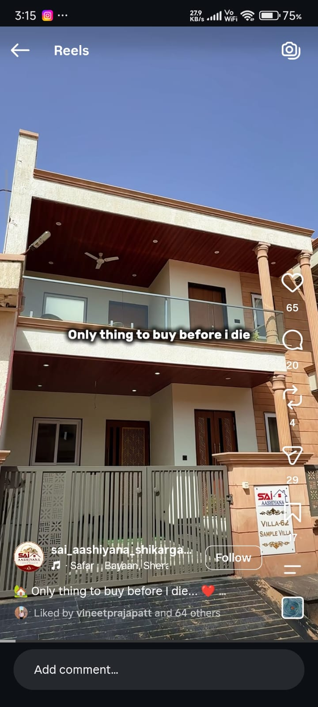

Buying guide · Jodhpur Real Estate
Five things to look for when choosing your family’s villa.

A villa is a decision for today and for all the days that follow. Finding the right home requires balancing space, security, craftsmanship, and long-term legal peace of mind.
1. A layout that lives well
Look for proportions that give each family member space, while keeping shared moments close. A well-planned 3BHK duplex (such as Sai Aashiyana's 2,035 – 2,258 sq. ft. floor plans) ensures generous room sizes, natural ventilation, and private balconies that never feel cramped.
2. A secure gated community
A standalone house can feel vulnerable. A gated township with 24/7 guarded security, boom-barrier access, and continuous CCTV surveillance offers safety for your children and parents, alongside a friendly neighborhood community.
3. A location that supports your daily routine
The best address makes life simpler. Shikargarh offers proximity to top educational institutions like Vidhya Ashram School (2 mins away), Jodhpur Airport (10 mins), and key transit points—while remaining peaceful and green.
4. Resort-style amenities & wellness
Modern luxury villas should extend beyond four walls. Look for dedicated community amenities such as an open-air swimming pool, fully equipped modern gym, mini club house, and landscaped parks for evening strolls.
5. Clear JDA approval & transparent documentation
Before committing, always ensure the project is approved by the Jodhpur Development Authority (JDA). As one of the most popular and flagship projects of SRS Group (SRS Build Venture LLP, with a proven track record of 10+ developments), Sai Aashiyana guarantees verified titles, transparent documentation, and seamless bank loan approvals.